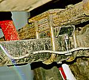
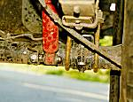

In comparison, it was much easier to prepare the rear axle housing than the front. As with the front, I completely disassembled it and steam cleaned it. New bearings & seals were purchased, as were new brakes and drums.
 The old spring perches were ground off with a angle grinder and new spring perches for the rear were purchased from Lou Feger's Racing. They were of a clamp-on design which allowed me to mount the axle to the my Jeep without welding the perches in place. This allowed me to adjust the pinion angle once the Jeep was resting on the wheels rather than trying to calculate/guesstimate what the pinion angle should be. I also had the option of adjusting the pinion angle after taking it for a few test drives.
With the Jeep sitting on all fours, I used a scissor jack to adjust the pinion so that it was just a few degrees shy of pointing directly at the rear xfer case output shaft.
 Lower shock mounts were similar to the front except that the studs ran parallel to the tube. They were mounted in line with the tube to maximize ground clearance.
With my spring over axle conversion, the parking brake cable worked with the Scout brakes but it was a bit short when the axle was at full droop. The YJ brake hose junction block is on the driver's side, opposite to the Scout layout. I tried moving the YJ's hard brake lines onto the D44 housing, but as I expected, one of the lines was seized. I had to make a new hard line for the passenger side.
I welded a bolt onto the top of the driver's side tube to mount the YJ's junction block (T-block) onto the D44 axle housing. I slipped the block over the bolt and secured it in place with a nut.
That wasn't too painful, was it?
{kind=link}
{kind=link}